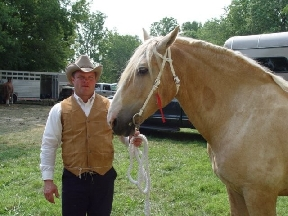
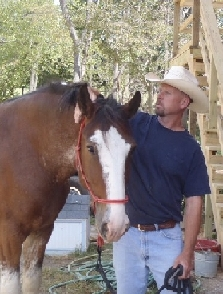
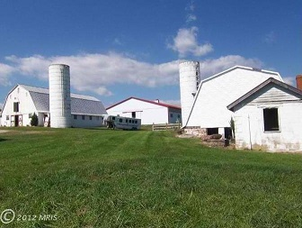

<!DOCTYPE HTML>
<html>
  <head>
    <meta charset="utf-8">
    <title>IdP Configuration</title>
	
	<!-- Import CSS -->
	<link rel="stylesheet" href="font-awesome-4.6.3/css/font-awesome.min.css">
	<link rel="stylesheet" href="styleR.css" type="text/css" charset="utf-8">
	
	<!-- Import libraries and resources -->
    <script src="libs/react.min.js"></script>
    <script src="libs/react-dom.min.js"></script>
    <script src="libs/browser.min.js"></script>
    
  </head>
  <body>
    
    <div id='root'></div>
    
    <script type="text/babel">
		/*Begin shared components*/
		class HeaderLayout extends React.Component {
			constructor(props) {
				super(props);
			};
			render() {
				return(
					<div className="headerLayout-container">
						<Navbar />
						<PageHeader />
					</div>
				);
			};
		};
		
		class PageHeader extends React.Component {
			constructor(props) {
				super(props);
			};
			render() {
				return(
					<div className="pageHeader-container">
						<div className="pageHeader-top">
							<div className="pageHeader-top-left">
								Gentle
							</div>
							<a href="indexR.html">
								</img>
							</a>
							<div className="pageHeader-top-right">
								Giants
							</div>
						</div>
						<div className="pageHeader-bottom">
							Draft Horse Rescue
						</div>
					</div>
				);
			};
		};
		
		class Navbar extends React.Component {
			constructor(props) {
				super(props);
			};
			render() {
				return(
					<ul className="navbar-container">
						<NavbarElement faIconClassName="fa-info-circle" menuOptionText="About" linkTarget="infoR.html" />
						<NavbarElement faIconClassName="fa-users" menuOptionText="Help" linkTarget="helpR.html" />
						<NavbarElement faIconClassName="fa-home" menuOptionText="Adopt" linkTarget="adoptR.html" />
						<NavbarElement faIconClassName="fa-heart" menuOptionText="Horses" linkTarget="horsesR.html" />
						<NavbarElement faIconClassName="fa-book" menuOptionText="Learn" linkTarget="learnR.html" />
						<NavbarElement faIconClassName="fa-calendar-o" menuOptionText="Media" linkTarget="mediaR.html" />
						<NavbarElement faIconClassName="fa-envelope-o" menuOptionText="Contact" linkTarget="contactR.html" />
					</ul>
				);
			};
		};
		
		class NavbarElement extends React.Component {
			constructor(props) {
				super(props);
			};
			render() {
				return(
					<li className="navbarElement-container">
						<a className="navbarElement-anchor" href={this.props.linkTarget}>
							<div className="navbarElement-content">
								<i className={"fa fa-lg " + this.props.faIconClassName}></i>
								<div className="navbarElement-text">
									{this.props.menuOptionText}
								</div>
							</div>	
						</a>
					</li>
				);
			};
		};
		
		class FooterLayout extends React.Component {
			constructor(props) {
				super(props);
			};
			render() {
				return(
					<div className="footerLayout-container">
						Gentle Giants Draft Horse Rescue
						<br/>
						17250 Old Frederick Road - Mount Airy MD 21771
						<br/>
						© 2017 all rights reserved.
					</div>
				);
			};
		};
		
		class StickyLinkLayout extends React.Component {
			constructor(props) {
				super(props);
			};
			render() {
				return(
					<div className="stickyLinkLayout-container">
						<form id="paypal-action-form" action="https://www.paypal.com/cgi-bin/webscr" method="post">
							<input name="cmd" value="_s-xclick" type="hidden"></input>
							<input name="hosted_button_id" value="66WGMXF98UHDN" type="hidden"></input>
							<input className="stickyLinkLayout-link" src="images/paypal-logo.png" name="submit" alt="PayPal - The safer, easier way to pay online!" type="image"></input>
						</form>
						<div className="stickyLinkLayout-standardLinksContainer">		
							<a className="stickyLinkLayout-link" href="http://saveadraft.blogspot.com/" target="_blank">
								</img>
							</a>
							<a className="stickyLinkLayout-link" href="https://www.facebook.com/GentleGiantsDraftHorseRescue" target="_blank">
								</img>
							</a>
							<a className="stickyLinkLayout-link" href="http://twitter.com/#!/GentleGiantsDHR" target="_blank">
								</img>
							</a>
							<a className="stickyLinkLayout-link" href="http://www.youtube.com/user/Gentlegiantsdrafts?feature=watch" target="_blank">
								</img>
							</a>
						</div>
					</div>
				);
			};
		};
		
		/*End shared components*/
		
		class InfoPage extends React.Component {
			constructor(props) {
				super(props);
			};
			render() {
				return(
					<div className="infoPage-container">
						<HeaderLayout />
						<InfoPageContent />
					</div>
				);
			};
		};
		
		class InfoPageContent extends React.Component {
			constructor(props) {
				super(props);
			};
			render() {
				return(
					<div className="pageContent-container">
						<div className="headerImage"></div>
						<div className="sectionTitle">
							Our Mission
						</div>
						<div>
							<div className="center-text">
								<p><em>Gentle Giants Draft Horse Rescue
								was formed to facilitate the rescue of
								Draft<br></br>and Draft Cross horses from
								slaughter, abuse, and neglect.</em></p>
							</div>
						
							<p>GGDHR promotes the benefits and uses of Draft
							horses of all breeds as trail mounts, schooling
							mounts, and competition mounts. We educate the
							public through the use of brochures, pamphlets,
							and public presentations on the topics of: horse
							slaughter and cruelty, the responsibilities of
							horse ownership, the over-population and
							over-breeding of horses, and how over-breeding
							contributes to the horse slaughter industry.</p>
							
							<p>Slaughter is a highly profitable market and
							most of the public is unaware that the buyers
							for the slaughterhouses frequent public auctions
							to purchase their horses. We attend the same
							public auctions, choose the Draft horses we feel
							are the most viable candidates for rescue, and
							then outbid the meat buyer. 

							<br></br><br></br>We transport the
							horses to our facility, where the horses are
							quarantined for a minimum of 21 days for
							illness. During that time, we begin to evaluate
							each individual horse and learn its personality
							and training level on the ground and under
							saddle. We ride the horses under many different
							circumstances, and evaluate for what level of
							rider the horse would best be suited. During
							this time, the horse also receives any necessary
							veterinary care, farrier care, dental care, and
							training. 

							<br></br><br></br>When the horses have completed their
							quarantine, they are available to be placed into
							adoptive homes under a strict contract. The
							horses are advertised on our website and on the
							internet to help find suitable adoptive homes.
							Each horse is evaluated with its prospective
							adopter, and if we feel the horse and rider are
							a suitable match for one another, then the
							adopter may apply to adopt that horse. At that
							time, GGDHR would perform a background and
							reference check, and may at times also conduct
							home visits, if deemed necessary.</p>
							
							<p>GGDHR is primarily funded by adoption fees,
							private donations, and sponsorships which
							facilitate the rescue of future draft horses
							from slaughter.</p>
						</div>
						<div className="sectionTitle">
							People
						</div>
						<div>
							<table cellspacing="10px">
								
								<tbody>
									<tr>
										<td></img></td>
										
										<td>
										<strong>Christine Hajek, President and Founder of Gentle Giants</strong>
										
										<p>Christine handles all inquiries and appointments for the
										available horses.  She is the proud adopter of Fiona and Twister.</p>
										
										<p>You can reach Christine at
										<a href="mailto:info@gentlegiantsdrafthorserescue.com">info@gentlegiantsdrafthorserescue.com</a> </p>
										</td>
									</tr>
									
									
									
									<tr>
										<td></img></td>
										
										<td>
										<strong>Jamie McIntosh, Secretary</strong>
										
										<p>You can reach Jamie at
										<a href="mailto:donations@gentlegiantsdrafthorserescue.com">donations@gentlegiantsdrafthorserescue.com</a>
										<br></br>
										or by calling 443-463-7084</p>
										</td>
									</tr>
									
									<tr>
										<td></img></td>
										
										<td>
										<strong>Kelly Double, Member - Board of Directors</strong>
										
										<p>Kelly serves on the Board of Directors
										and also volunteers his time and
										expertise training some of the more
										difficult horses who enter the
										rescue.</p>
										
										<p>You can reach Kelly at
										<a href="mailto:Kelly@gentlegiantsdrafthorserescue.com">Kelly@gentlegiantsdrafthorserescue.com</a>
										<br></br>Kelly is also the proud adopter of Abby!</p>
										</td>
									</tr>
								
								</tbody>
							</table>
						</div>
						<div className="sectionTitle">
							The Farm
						</div>
						<div>
							<div>
								
								</img>
								
								<div id="locationAndContact">
									<div>17250 Old Frederick Rd.</div>
									<div>Mt. Airy MD, 21771</div>
									<br/>
									<div><a href="https://maps.google.com/maps?q=17250+Old+Frederick+Road,+Mount+Airy+MD+21771&amp;daddr=17250+Old+Frederick+Rd,+Mt+Airy,+MD+21771&amp;hnear=17250+Old+Frederick+Rd,+Mt+Airy,+Maryland+21771&amp;gl=us&amp;t=m&amp;geocode=%3BCUIEQXkudu4zFdp1WAIdeVhn-yllOFeOBSzIiTGoJm-EJkC8Yg&amp;z=14">Directions to the farm</a></div>
									<div><a href="mailto:GentleGiantsDHR@gmail.com">Schedule an appointment</a></div>
									<div>Please note that we are volunteer-run and therefore are open by appointment only</div>
								</div>
								
							</div>
							<a name="rules"></a>
							<h1>Gentle Giants Barn Rules</h1>
								
							<ol>
								
								<li>All riders must have long pants, and closed toed
								heeled boots or riding shoes. No riding is permitted in
								shorts or tennis shoes. </li>
										
								<li>Allow enough time to groom, tack, and untack your
								horse. Our volunteers will be there to help with
								anything should you have a problem or question, but we
								do want to see how you interact with and handle the
								adoptive horse.</li>
								
								<li>Please do not bring children with you to your
								appointment, unless the adoptive horse is intended for
								the child. If you are bringing a guest, please let us
								know in advance.</li>
								
								<li>No one shall go into the pastures without the assistance and 
												invitation of a staff member.</li>
								
								<li>All riders must wear a helmet when mounted. We can provide a
								helmet for you if you do not have one.</li>
								
								<li>No smoking in the barn.</li>
								
								<li>Please do not bring pets to the farm. Our dogs
								unfortunately do not enjoy sharing their space!</li>
								
							</ol>
						</div>
						<FooterLayout />
					</div>
				);
			};
		};
        
        ReactDOM.render(
			<div>
				<InfoPage />
				<StickyLinkLayout />
			</div>, 
            document.getElementById('root')
        );
    </script>
  </body>
</html>